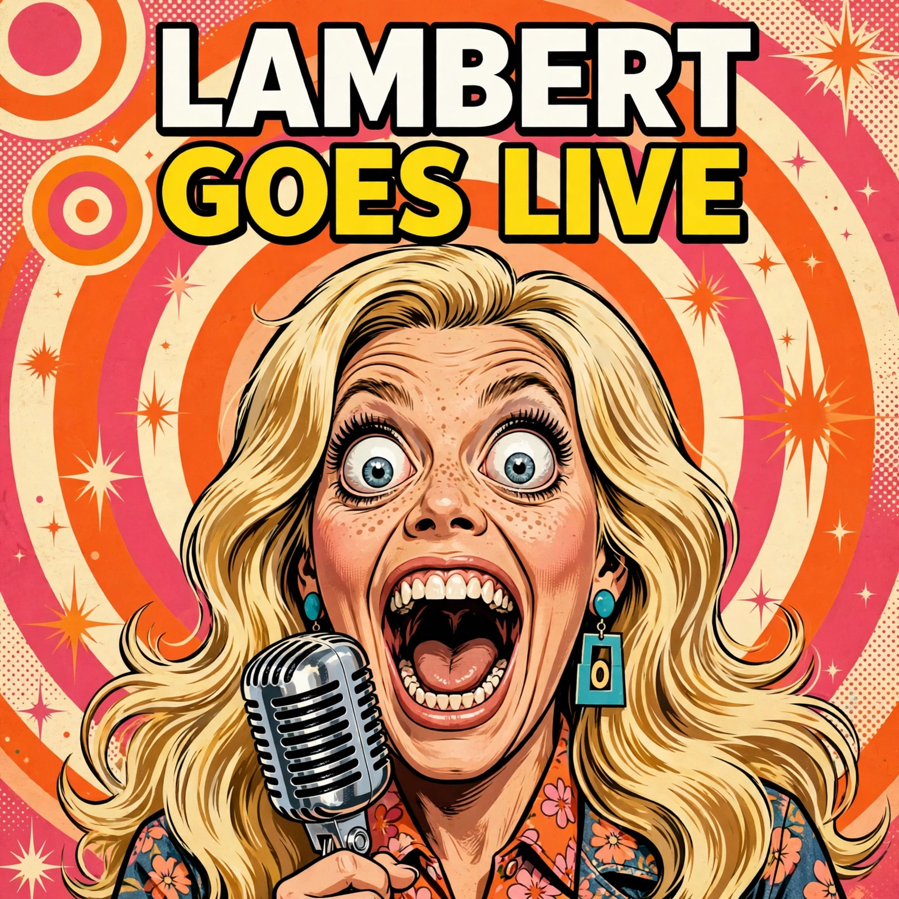

Morning Brief • Wednesday 60s Look • Story 04 of 5
Lambert Goes Live

Miranda Lambert has announced Songline, a nine-track live album arriving November 13, 2026, followed by a concert film on November 20 through Amazon Music. The project captures her October 1 performance at The Truth in Nashville, where she was joined by her longtime band and a 12-piece orchestra. The setlist features familiar favorites including Bluebird, Kerosene, Tin Man, and Gunpowder & Lead, alongside newer material from her album Crisco, and fans can already hear a live version of Snakeskin Boots on Amazon Music.
Read the full story →